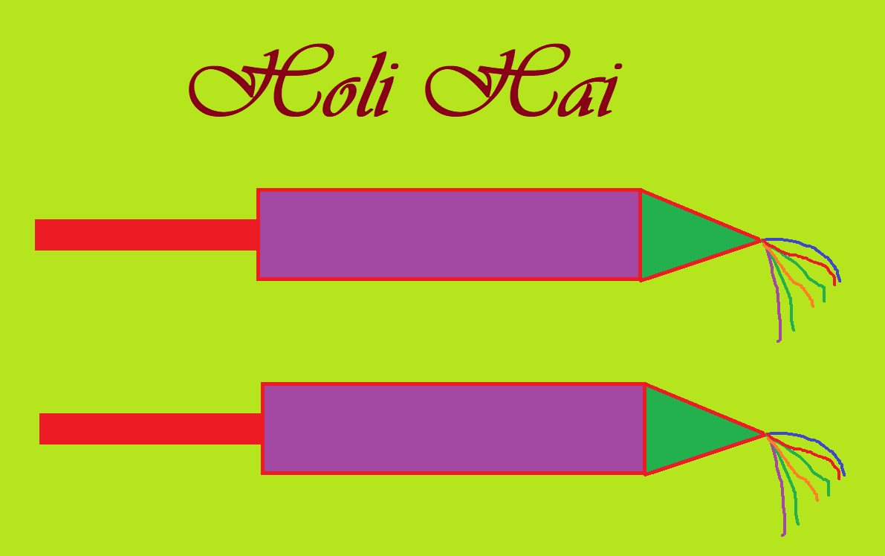

 Holi
Holi, the celebration of hues, marks the onset of goodness, prosperity and positivity with spring every year. According to the faith and legends of Hinduism, different parts of India find a different significance in their “festival of colors”.
Some parts believe Holi is meant to cherish the love between Radha and Krishna while others take this opportunity to rejoice the defeat of evils within and around us. For many others, Holi is a period of pure love, forgiveness and fulfilment.
The festival spreads over three days starting with “Holika Dahan”- the full moon night when rituals and offerings are performed near a bonfire to destroy the inner and outer evils residing in this world. This is followed by Choti Holi and the third day of Rangwali Holi when people across the country indulge in the festivities of colour.
Holi comes with a chance to forgive, to mend broken bonds and to love again through the exchange of food, sweets, colors, embraces and smiles. Friends and relatives visit each other on this auspicious day to seek blessings and spread happiness.
While different parts of the country find different methods to enhance the excitement of Holi, irresponsibility and the use of artificial colors and intoxicants only bring down the spirit of the festival meant to splash happiness and hues.